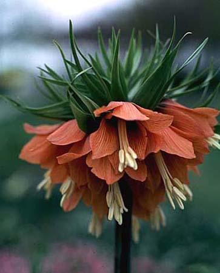

This bulbflower naturalizes well in gardens. The bulb grows best in well-drained soil high in humus. It will grow in lightly shaded forest areas and on rocky outcrops as well as in open meadows or praries. Additionally it is found growing alongside streams and rivers. The plants may be divided in autumn after the leaves have withered. Bulbs should be planted in the autumn. Additionally the plant spreads by seed rather than by runners.

With its deeply fragrant flowers -- scallop-edge bells that dangle about bright emerald-green leaves -- this nearly deer-proof shade lover appears to be delicate in an old-fashioned way. But the pretty plant is also an intrepid wanderer, spreading readily and rapidly, and anyone who gardens in a small space will want to watch this perennial to make sure it stays in bounds. Tolerates shade well. Warning: this plant is poisonous.
Crown imperials are strong-growing bulbous plants, making rapid growth in the spring, flowering during April/early May and dying down in early summer. Best in raised beds or planters. Does not tolerate shade; needs a warm, sunny position where it can be left undisturbed for many years.